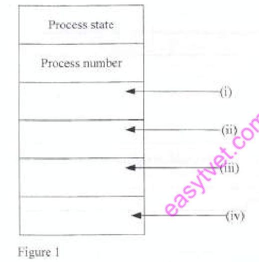
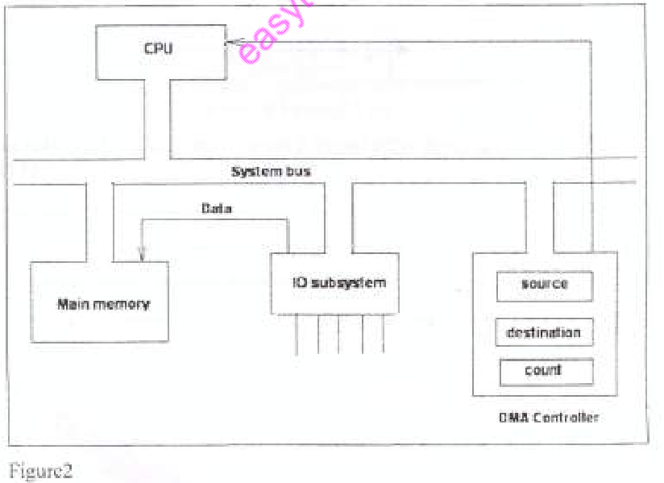
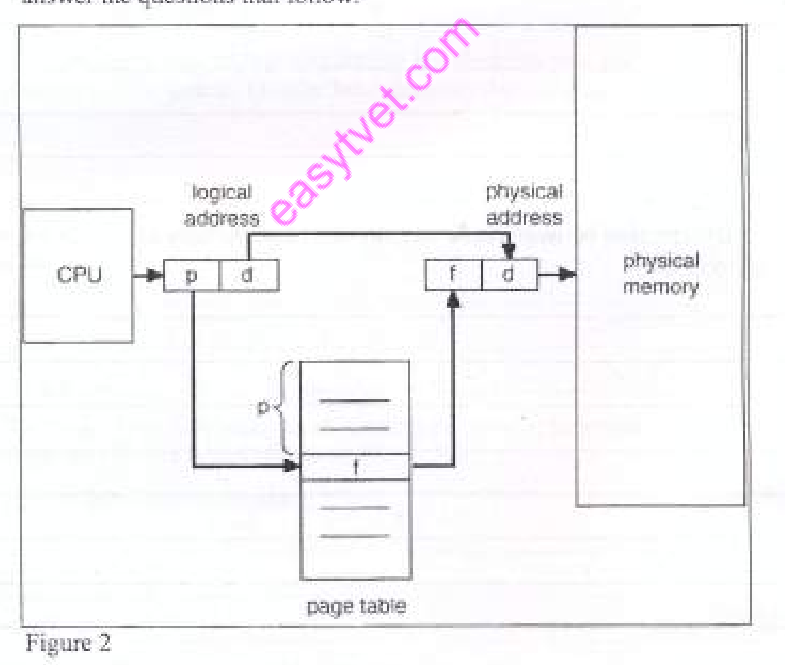

OPERATING SYSTEMS
Exam Code: 2920/105
Duration: 3 hours
Period: November 2012
Outline two roles for each of the following computer components in operating systems: (i) processor: Instruction Execution: The processor, or CPU, is responsible for executing instructions of programs that constitute the operating system and user applications. It fetches instructions from memory, decodes them, and performs the operations specified, which are fundamental to all computing tasks. Process Management: The processor, under the control of the operating system, manages and executes processes. It allocates CPU time to different processes, switches between them to enable multitasking, and ensures fair and efficient utilization of the processing resource. Outline two roles for each of the following computer components in operating systems: (ii) RAM. Storing Running Programs and Data: RAM (Random Access Memory) serves as the primary memory for actively running programs and the data they are currently using. The operating system loads program code and data into RAM for quick access by the processor, enabling efficient execution of applications. Temporary Storage for OS Operations: RAM provides temporary storage for the operating system itself during its operation. The kernel, device drivers, and other OS components reside in RAM while the system is running, allowing the OS to manage system resources, handle interrupts, and perform other essential functions. A group of Module II students were carrying out research on types of operating systems. They listed the following features of a certain type of an operating system: (i) Identify the most appropriate type of operating system that exhibited these features justifying your answer. The most appropriate type of operating system exhibiting these features is a Distributed Operating System. This is justified because the features listed - support for multiple users accessing the system simultaneously, collection of autonomous computers connected through a network, and sharing of data and resources - are characteristic of distributed systems where resources and processing are spread across multiple computers working together as a single system image. A group of Module II students were carrying out research on types of operating systems. They listed the following features of a certain type of an operating system: (ii) Explain two advantages of the type of operating system identified in (1). Resource Sharing: A Distributed Operating System excels at resource sharing. It allows users across different computers in the network to access and utilize resources such as files, printers, databases, and processing power as if they were on a single machine. This enhances efficiency and reduces redundancy by pooling resources and making them available to a wider user base, optimizing overall resource utilization. Enhanced Reliability and Fault Tolerance: Distributed systems offer enhanced reliability and fault tolerance. Because processing and resources are spread across multiple independent computers, the failure of one computer does not necessarily bring down the entire system. If one node fails, tasks can be redistributed to other nodes, ensuring continuous operation and minimizing downtime. This redundancy and resilience improve the overall robustness and availability of the system. (i) Explain the term kernel as used in operating systems. The kernel is the core component of an operating system. It is the innermost layer of the OS and has direct control over the hardware. The kernel provides essential services such as process management, memory management, device management, and system calls. It acts as a bridge between the hardware and user-level software, managing system resources and ensuring secure and efficient operation of the computer. (ii) Differentiate between block-oriented and stream-oriented VO devices. Block-Oriented I/O Devices: Block-oriented I/O devices transfer data in fixed-size blocks. Data is structured into blocks, and I/O operations are performed on these entire blocks at a time. These devices typically have addressable blocks, allowing for random access to any block in the device. Examples of block-oriented devices include hard disks, SSDs, and tapes (when used in block mode). Data transfer with block devices is usually buffered and may involve seek operations to locate specific blocks. Block devices are suitable for applications requiring structured data storage and random access, such as file systems and databases. Stream-Oriented I/O Devices: Stream-oriented I/O devices transfer data as a continuous stream of bytes or characters, without any fixed block structure. Data is processed and transferred sequentially, and there is typically no concept of addressable blocks or random access. Examples of stream-oriented devices include keyboards, mice, printers, and network interfaces. Data transfer with stream devices is usually unbuffered or minimally buffered and is processed as a continuous flow. Stream devices are suitable for character-based input/output, communication, and real-time data streams where the sequence of data is important. Key Distinction: The primary difference lies in how data is organized and transferred. Block-oriented devices use fixed-size blocks and allow random access, while stream-oriented devices use continuous byte streams and are typically accessed sequentially. Block devices are for structured storage, and stream devices are for continuous data flow. (d) Susan was required to configure RAID on a computer system that contained two hard disks. Explain two most appropriate type of RAID she could use. RAID 1 (Mirroring): RAID 1 is a highly appropriate choice for a system with two hard disks as it provides data redundancy and fault tolerance. In RAID 1, data is mirrored across both disks, meaning an exact copy of the data is written to each disk. If one disk fails, the system can continue to operate using the remaining disk without data loss. RAID 1 is simple to implement with two disks and offers excellent data protection, making it suitable for scenarios where data reliability is paramount. However, it reduces the effective storage capacity by half, as one disk's capacity is used for mirroring. RAID 0 (Striping): Although RAID 0 does not provide fault tolerance, it is appropriate if Susan's primary goal is to improve performance. RAID 0 stripes data across both disks, meaning data is split into segments and written alternately across the two disks. This allows for parallel read and write operations, potentially doubling the data transfer rate compared to a single disk. RAID 0 is simple to implement with two disks and maximizes storage capacity and performance. However, it offers no redundancy; if either disk fails, all data is lost. Therefore, RAID 0 is suitable only if data loss is acceptable or if backups are managed separately, and performance is the main concern. 2. (a) (i) Outline two objectives of developing an operating system. Resource Management: One primary objective is to manage computer hardware and software resources efficiently and effectively. This includes managing the CPU, memory, I/O devices, and files. The OS aims to allocate resources fairly among different processes and users, optimize resource utilization, and prevent conflicts to ensure smooth system operation. User Convenience and Interface: Another key objective is to provide a user-friendly and convenient interface for users to interact with the computer system. The OS should simplify complex hardware operations and provide abstractions that make it easier for users to run applications, manage files, and perform tasks. A good OS aims to enhance user productivity and experience by providing intuitive and efficient ways to use the computer. (ii) Differentiate between SJF and FCFS process scheduling algorithms. Shortest Job First (SJF) Scheduling Algorithm: SJF (Shortest Job First) is a process scheduling algorithm that selects the process with the shortest estimated burst time (CPU execution time) to run next. SJF aims to minimize the average waiting time and turnaround time of processes. It can be preemptive or non-preemptive. In its non-preemptive version, once a process starts, it runs to completion. In the preemptive version (Shortest Remaining Time First - SRTF), a running process can be preempted if a new process arrives with a shorter remaining burst time. SJF is optimal in minimizing average waiting time but requires knowing or estimating the burst time of processes in advance, which can be challenging in practice. First Come First Served (FCFS) Scheduling Algorithm: FCFS (First Come First Served) is the simplest process scheduling algorithm. It schedules processes in the order of their arrival in the ready queue. The process that arrives first gets the CPU first. FCFS is non-preemptive; once a process starts running, it continues until it completes or blocks for I/O. FCFS is easy to implement and understand but can lead to convoy effect, where a long-running process blocks shorter processes behind it, resulting in higher average waiting and turnaround times, especially if processes arrive in a non-optimal order (e.g., long process arrives first). Key Distinction: The main difference is in their scheduling criteria. SJF prioritizes processes with the shortest burst time to minimize average waiting time, while FCFS prioritizes processes based on their arrival order, regardless of their burst times. SJF is generally more efficient in terms of average waiting time but is more complex to implement and requires burst time estimation, whereas FCFS is simple but can be inefficient, especially with varying process lengths. (b) (i) State four process states in an operating system. New: The process is being created. Ready: The process is ready to run but waiting for the CPU to be allocated. Running: The process is currently being executed by the CPU. Waiting (or Blocked): The process is waiting for an event to occur, such as I/O completion or resource availability. (ii) Explain two benefits of using round robin scheduling algorithm in operating systems. Fairness: Round Robin (RR) provides fair allocation of CPU time to all processes. Each process gets a fixed time slice (quantum) of CPU time in turns. This prevents starvation, ensuring that all processes, regardless of their priority or burst time, eventually get a chance to run. Fairness is particularly important in time-sharing systems where multiple users or interactive applications are running concurrently, as it ensures that no single process monopolizes the CPU. Responsiveness and Good for Interactive Systems: RR offers good responsiveness, especially for interactive systems. Because each process gets a time slice regularly, even if it's a long process, the system remains responsive to user inputs and interactive tasks. Short processes can complete quickly, and long processes make steady progress without causing the system to become sluggish. This makes RR suitable for environments where users expect quick feedback and smooth interaction with applications. (c) With the aid of a diagram, outline the client server structure of an operating system. The Client-Server structure of an Operating System separates the operating system functionalities into two main parts: the client and the server. The microkernel acts as the core, providing minimal essential services, and other OS services are implemented as user-level servers that clients communicate with. Diagram of Client-Server OS Structure: Description: Microkernel: The microkernel is the minimal core of the OS, containing only essential functionalities such as process management, inter-process communication (IPC), and basic memory management. It is kept small and simple to enhance reliability and security. User-Level Servers (OS Services): Most traditional OS services, such as file systems, device drivers, network services, and print services, are implemented as user-level server processes that run on top of the microkernel. These servers operate in user mode, separate from the kernel's privileged mode. Client Processes: User applications and processes act as clients. When a client process needs an OS service (e.g., file I/O, network access), it sends a request message to the appropriate server process through the microkernel's IPC mechanism. Message Passing Communication: Clients and servers communicate by exchanging messages through the microkernel. The client sends a request message to the server, the server processes the request, and sends a response message back to the client. All communication is mediated by the microkernel. This structure promotes modularity, extensibility, and fault isolation. Server failures are less likely to crash the entire system as servers run in user mode, and the microkernel remains protected. (d) Mary, a secretary with a certain company used operating systems to create directories for various lecturers. Outline four benefits of Mary's approach. Organization of Files: Creating directories allows for better organization of files. Mary can categorize and group files related to each lecturer within their respective directories. This makes it easier to locate and manage files, preventing a cluttered and disorganized file system, and improving overall file management efficiency. Reduced Naming Conflicts: Directories help in reducing file naming conflicts. Mary can use the same file names for different lecturers as long as they are within different directories. For example, she can have "Notes.docx" in each lecturer's directory without conflict. This is not possible in a flat, single-level directory, where all file names must be unique. Improved Access Control and Security: Directories facilitate better access control and security. Mary can set permissions on each directory to control who can access, modify, or delete files within that directory. This allows for restricting access to lecturers' files, ensuring that only authorized personnel can access or modify specific files, enhancing data security and privacy. Simplified File Sharing and Collaboration: Directories can simplify file sharing and collaboration. Mary can easily share a specific directory with a lecturer, granting them access to all files within that directory. This streamlines the process of sharing files related to a particular lecturer, making collaboration more efficient and organized compared to sharing individual files scattered across a flat file system. 3. (a) Outline three file access methods that could be used in an operating systems. Sequential Access: In sequential access, files are accessed in a linear order, from the beginning to the end. To access a specific record, one must read through all preceding records. This method is simple and efficient for processing files in order, like reading a log file. Direct (Random) Access: In direct access, also known as random access, any record in a file can be accessed directly without reading preceding records. This is achieved by using a record number or key to calculate the record's location. Direct access is suitable for applications needing quick access to specific records, like databases. Indexed Sequential Access: Indexed sequential access combines sequential and direct access. It uses an index to enable direct access to records, but also allows for efficient sequential processing. The index provides a lookup mechanism for direct access, while the sequential organization supports ordered processing. (b) With the aid of a diagram, outline the five levels of typical file systems architecture as used in operating systems. The five levels of a typical file system architecture in operating systems represent a layered approach to file management, from the physical storage to the user interface. Diagram of Five-Level File System Architecture: Description of Levels: Level 5: User Application Layer: This is the highest level, where user applications interact with the file system. Applications use system calls (e.g., `open`, `read`, `write`, `close`) to perform file operations. This layer is concerned with user-level file access and operations. Level 4: Logical File System Layer: This layer, also known as the file system interface, provides the logical view of the file system to users and applications. It handles file naming, directory structure, file metadata (attributes), and access control. It translates user-level file operations into logical operations that the lower layers can understand. Level 3: File Organization Module: This layer is responsible for mapping logical file addresses to physical block addresses on storage devices. It manages file metadata (like file headers, inodes, or file allocation tables) that track the location of file blocks on disk. It deals with file allocation strategies, free space management, and logical-to-physical address translation. Level 2: Basic File System Layer: This layer, sometimes called the file system proper, provides basic file system commands to interact with device drivers. It issues generic commands like "read block," "write block," and "allocate block" to the I/O control layer, abstracting away device-specific details. It focuses on block-level operations and management. Level 1: I/O Control Layer: This is the lowest software layer, consisting of device drivers. It interacts directly with the hardware controllers of storage devices. Device drivers translate generic block-level requests from the basic file system into device-specific commands that the hardware can understand and execute. It handles hardware-specific I/O operations and interrupt handling. Level 0: Storage Media Layer: This is the physical storage medium itself, such as hard disks, SSDs, or other storage devices, where the actual file data is stored in physical blocks or sectors. This layered architecture provides abstraction, modularity, and device independence, making file system management organized and efficient. (c) (i) Outline two goals of memory management in operating systems. Efficient Memory Utilization: A primary goal is to utilize memory efficiently to accommodate as many processes as possible and minimize wasted memory space. Techniques like dynamic allocation, virtual memory, and paging are used to optimize memory usage and improve system throughput by reducing fragmentation and overhead. Address Translation and Protection: Memory management aims to provide address translation from logical to physical addresses, allowing processes to have their own virtual address space, and to implement memory protection. Protection ensures that processes cannot access memory outside their allocated space, preventing interference and enhancing system stability and security. (ii) Differentiate between device drivers and device I/O as used in operating systems. Device Drivers: Device drivers are software modules that act as an interface between the operating system kernel and specific hardware devices. They are device-specific and provide the low-level control and communication necessary for the OS to interact with hardware. Device drivers translate generic I/O requests from the kernel into device-specific commands that the hardware controller can understand. They handle hardware-specific operations, manage device registers, and handle interrupts from devices. Device drivers are essential for achieving device independence, allowing the OS to support a variety of hardware without modifying the core OS code. Device I/O: Device I/O (Input/Output) refers to the actual operations of transferring data between the computer system and external devices. Device I/O encompasses the entire process of data exchange, including issuing I/O requests, device access, data transfer, and handling device status and interrupts. Device I/O operations are managed by the operating system, often initiated by user programs through system calls. The OS uses device drivers to carry out these I/O operations, controlling the hardware to perform data input or output. Device I/O is the fundamental mechanism for the computer system to interact with the external world. Key Distinction: Device drivers are the *software* components that enable communication with hardware, acting as translators between the OS and devices. Device I/O is the *process* of data transfer itself, the actual operations performed by the system to input or output data using hardware devices, facilitated by device drivers. (d) Paul, a programmer with a certain software company was required to design an operating system that would use segmentation to manage memory. Outline four advantages for using this memory management technique. Logical Address Space Structure: Segmentation allows for a logical view of memory, dividing the address space into logical units called segments (code, data, stack). This reflects the program's structure, making it easier to organize and manage memory logically. Programmers can work with logical segments, simplifying program design and modularity. Protection at Segment Level: Segmentation enables fine-grained memory protection at the segment level. Each segment can have its own protection attributes (read-only, read-write, execute-only), allowing the OS to enforce access control and prevent unauthorized access to specific segments. This enhances system security by providing segment-based protection boundaries. Sharing of Segments: Segmentation facilitates sharing of segments between processes. Segments, especially code segments for libraries or shared modules, can be shared among multiple processes while maintaining protection. This reduces memory duplication, improves memory efficiency, and enables efficient code sharing between programs. Dynamic Growth of Segments: Segments can grow or shrink dynamically as needed during program execution. This allows flexible memory allocation and efficient use of memory, as segments can adjust their size according to the program's data or code requirements, reducing wasted memory space compared to fixed-size partitions. 4. (a) Explain the term pipe as used in operating systems. A pipe in operating systems is a mechanism for inter-process communication (IPC) that allows unidirectional data flow between two or more processes. It acts as a communication channel where one process can write data into one end of the pipe, and another process can read that data from the other end. Pipes are typically used for communication between related processes, like parent and child processes, or processes in a pipeline of commands. They provide a simple and efficient way for processes to exchange data sequentially. (b) Outline four factors that should be considered when selecting computer memory other than cost. Speed (Access Time and Cycle Time): Memory speed is a crucial factor, measured by access time (time to retrieve data) and cycle time (time between successive accesses). Faster memory reduces latency and improves system performance. Different memory types (e.g., DDR5, DDR4) offer varying speeds. The required speed depends on the application and system performance needs. Capacity (Size): Memory capacity, measured in GB or TB, determines the amount of data and programs that can be held in memory simultaneously. Higher capacity allows for running more applications and handling larger datasets without relying on slower secondary storage (disk). The needed capacity depends on the workload and expected memory usage of applications. Latency: Memory latency is the delay between requesting data and the data becoming available. Lower latency improves system responsiveness, especially for applications that require frequent memory accesses. Memory latency affects overall CPU performance and application speed. Different memory technologies have different latency characteristics. Power Consumption and Energy Efficiency: Power consumption is an important factor, especially for portable devices and energy-efficient systems. Memory modules vary in their power requirements and energy efficiency. Lower power consumption reduces heat generation, extends battery life in laptops, and lowers operating costs in data centers. Energy efficiency is increasingly important for sustainable computing. (c) Explain three approaches that could be used to manage deadlocks in an operating system. Deadlock Prevention: Deadlock prevention aims to prevent deadlocks by negating one or more of the necessary conditions for deadlock to occur (Mutual Exclusion, Hold and Wait, No Preemption, Circular Wait). Techniques include: * Mutual Exclusion: Making resources shareable (not always possible). * Hold and Wait: Requiring processes to request all needed resources at once or not hold resources when requesting new ones. * No Preemption: Allowing preemption of resources from a process under certain conditions. * Circular Wait: Imposing a linear ordering of resource types and requiring processes to request resources in increasing order. Deadlock prevention is proactive but can lead to reduced resource utilization and system performance due to restrictions on resource allocation. Deadlock Avoidance: Deadlock avoidance allows the system to enter a potential deadlock state but makes decisions to avoid entering a deadlock. It requires the system to have a priori information about the maximum resource needs of each process. Algorithms like the Banker's Algorithm are used to dynamically check if granting a resource request will lead to a safe state (a state where all processes can complete without deadlock). Deadlock avoidance is less restrictive than prevention but requires advance knowledge and can also limit resource utilization to ensure safety. Deadlock Detection and Recovery: Deadlock detection and recovery allows deadlocks to occur but detects when a deadlock has happened and takes actions to recover. The system periodically checks for deadlocks using algorithms to detect cycles in the resource allocation graph. If a deadlock is detected, recovery strategies are employed, such as process termination (aborting one or more deadlocked processes) or resource preemption (forcibly taking resources from processes). Deadlock detection and recovery is reactive, allowing for higher resource utilization but incurring overhead for detection and recovery, and potentially causing process restarts and data loss during recovery. (d) Figure 1 shows a typical a process control block diagram in an operating system. Use it to answer the questions that follow.  (i) Identify each of the layers of the diagram labeled (i), (ii), (iii) and (iv). Based on Figure 1, which represents a Process Control Block (PCB) diagram: (i) Process Identifier (PID) / Process Number: Label (i) points to the section for "Process number". This field is the unique identifier assigned to each process by the operating system. It is used to distinguish and manage different processes within the system. (ii) Program Counter (PC): Label (ii) points to a section that would typically represent the Program Counter. The Program Counter stores the address of the next instruction to be executed by the process. It is crucial for process execution and context switching. (iii) Registers: Label (iii) likely indicates the section for CPU Registers. This area stores the current values of the CPU registers for the process. Registers hold temporary data and intermediate results that the process is actively using. Saving and restoring register values is a key part of context switching. (iv) Process State: Label (iv) points to "Process state". This field indicates the current state of the process, such as New, Ready, Running, Waiting, or Terminated. The process state is essential for process scheduling and management, reflecting the current activity and status of the process within the system. (d) Figure 1 shows a typical a process control block diagram in an operating system. Use it to answer the questions that follow. (ii) Outline four elements of process control information in a process control block diagram. Process State: The current state of the process (e.g., running, ready, waiting, new, terminated) is a critical element. It indicates the current activity of the process and is used by the scheduler to manage process execution. Program Counter (PC): The program counter, as mentioned, stores the address of the next instruction to be executed. It is essential for resuming process execution after context switches or interruptions. CPU Registers: The contents of CPU registers, including general-purpose registers, stack pointer, and status registers, need to be saved in the PCB. These registers hold the process's working data and execution context and must be restored when the process resumes execution. Memory Management Information: The PCB contains memory management information, such as pointers to page tables or segment tables. This information is necessary for the operating system to manage the process's virtual memory space and translate virtual addresses to physical addresses during execution. 5. (a) (i) Explain the term semaphore as used in operating system. A semaphore is a synchronization primitive used in operating systems for controlling access to shared resources and for process synchronization. It is an integer variable that, apart from initialization, is accessed only through two atomic operations: wait (P) and signal (V). Semaphores help manage critical sections and prevent race conditions in concurrent systems by controlling the number of processes that can access a resource simultaneously. (ii) Differentiate between fixed and dynamic memory partitioning. Fixed Memory Partitioning: In fixed memory partitioning, main memory is divided into a fixed number of partitions at system initialization. Each partition has a predetermined size, which is set at system startup and remains constant. Partitions can be of equal size (equal-sized partitioning) or varying sizes (unequal-sized partitioning). Each partition can hold only one process at a time. Advantages: Simple to implement and manage. Disadvantages: Internal fragmentation (if process size is smaller than partition size), limits degree of multiprogramming due to fixed number of partitions, and inefficient memory utilization if partition sizes are not well-matched to process sizes. Dynamic Memory Partitioning: In dynamic memory partitioning, memory partitions are created dynamically at runtime, based on the actual memory requirements of processes. When a process needs to be loaded, the operating system allocates a partition of exactly the size needed by the process from the available free memory. Partitions are created and sized as needed, and they are not fixed beforehand. Advantages: Reduces internal fragmentation as partitions are tailored to process size, allows for more efficient memory utilization compared to fixed partitioning. Disadvantages: External fragmentation can occur over time as memory becomes fragmented into smaller, non-contiguous blocks, and memory management is more complex compared to fixed partitioning. Key Distinction: The primary difference is in how partitions are created and sized. Fixed partitioning uses pre-defined, static partitions, while dynamic partitioning creates partitions dynamically based on process needs. Fixed partitioning is simpler but leads to internal fragmentation, while dynamic partitioning is more memory-efficient but can suffer from external fragmentation. Figure 2 shows a typical I/O communication technique. Use it to answer the questions that follow.  (i) Identify the I/O communication technique exhibited in the diagram justifying your answer. The I/O communication technique exhibited in the diagram is Direct Memory Access (DMA). This is identified by the presence of a "DMA Controller" component shown in the diagram, which is responsible for managing data transfer between the I/O subsystem and Main memory, bypassing the direct involvement of the CPU for each data word transfer. Figure 2 shows a typical I/O communication technique. Use it to answer the questions that follow. (ii) Outline the procedure used by the I/O communication technique identified in (i). The procedure used by Direct Memory Access (DMA) communication technique is as follows: CPU Initiation: The CPU initiates the DMA transfer by programming the DMA Controller. This involves providing the DMA controller with information such as the source address (memory or I/O device), destination address (memory or I/O device), data count (number of bytes to transfer), and the direction of transfer (read or write). DMA Transfer Execution: Once programmed, the DMA controller takes over the data transfer. It directly transfers data between the I/O device and main memory via the System bus, without further CPU intervention for each byte or word transferred. The CPU is free to perform other tasks concurrently during this DMA transfer. Data Transfer and Memory Access: The DMA controller requests access to the system bus and main memory. It manages the data transfer process, handling addressing, bus arbitration, and data synchronization. Data is transferred in blocks or bursts for efficiency. Transfer Completion and Notification: After completing the data transfer, the DMA controller notifies the CPU, typically through an interrupt. This signals that the DMA operation is complete, and the CPU can then process the transferred data or initiate further I/O operations. The DMA controller relinquishes control of the bus after the transfer is done. (c) Tom, an intern student was required to design I/O module for a certain operating system. Explain two objectives that he could consider. Device Independence: One key objective is to achieve device independence. The I/O module should be designed to provide a uniform interface to the operating system and user programs, regardless of the specific characteristics of different I/O devices. This allows applications to perform I/O operations without needing to know the details of each device, making the system more portable and easier to maintain. Device drivers handle device-specific details, providing an abstraction layer. Efficiency and Performance: Another crucial objective is to ensure efficient and high-performance I/O operations. The I/O module should be designed to minimize overhead, maximize data transfer rates, and optimize resource utilization. Techniques like buffering, caching, and DMA should be considered to improve I/O performance and reduce CPU involvement in data transfer. Efficiency is essential for overall system responsiveness and throughput. (d) Mark, a systems consultant recommended an I/O buffering add-on module to an operating system. Explain two conditions that could justify Mark's recommendation. Speed Mismatch between CPU and I/O Devices: A condition justifying I/O buffering is a significant speed mismatch between the CPU and I/O devices. I/O devices, especially slower ones like hard disks or network interfaces, operate at speeds much lower than the CPU's processing speed. Buffering can bridge this speed gap by temporarily holding data being transferred between the CPU and I/O devices. This allows the CPU to continue processing without waiting for slow I/O operations to complete, improving overall system throughput and CPU utilization. Data Transfer Size Discrepancies: Another condition is when there are discrepancies in data transfer sizes between the CPU/memory and I/O devices. For example, the CPU may process data in larger blocks, while I/O devices may transfer data in smaller units or variable sizes. Buffering provides a temporary storage area to accumulate or decompose data, enabling efficient data transfer between components with different data handling granularities. Buffering helps to adapt data flow to match the requirements of both the CPU/memory system and the I/O devices, optimizing data transfer efficiency and reducing overhead. 6. (a) Explain each of the following terms as used in I/O devices: (i) disk cache: Disk Cache is a portion of RAM (Random Access Memory) that is used as a cache memory for disk I/O operations. It stores frequently accessed data blocks from the hard disk to speed up subsequent accesses. When the system needs to read data from the disk, it first checks the disk cache. If the data is found in the cache (cache hit), it is retrieved from the faster RAM cache instead of the slower disk, significantly reducing access time and improving I/O performance. Explain each of the following terms as used in I/O devices: (ii) cache manager. Cache Manager is the software component within the operating system that manages the disk cache. It is responsible for implementing cache policies, such as deciding which data blocks to store in the cache, when to retrieve data from disk into the cache, and which blocks to replace when the cache is full (cache replacement policies). The cache manager aims to optimize cache hit rate and minimize cache misses, thereby maximizing the performance benefits of disk caching. (b) A group of Module II students were carrying out assignment on categories of I/O devices. Explain two categories they are likely to have mentioned in the report. Storage Devices: Storage devices form a major category of I/O devices, used for long-term data storage. These include Hard Disk Drives (HDDs) and Solid State Drives (SSDs). HDDs use magnetic platters for storage and are characterized by larger capacities and lower cost per GB, but have slower access times and higher latency. SSDs use flash memory for storage, offering much faster access times, lower latency, and better durability, but are typically more expensive per GB and may have lower capacities compared to HDDs. Storage devices are crucial for persistent data storage and file systems. Human-Interface Devices (HIDs): Human-Interface Devices (HIDs) constitute another significant category, enabling human-computer interaction. These include keyboards, mice, monitors, and touchscreens. Keyboards and mice are input devices for user commands and data entry. Monitors and touchscreens are output devices for displaying visual information and, in the case of touchscreens, also for input. HIDs facilitate user interaction with the computer system, enabling input, output, and control. (c) Ann, an intern student was required to list elements in a file descriptor in her company's file system. Outline four elements that she could have listed. File Permissions/Access Rights: File permissions define who can access the file and what operations they are allowed to perform (e.g., read, write, execute). Permissions typically include settings for the file owner, group, and others, controlling access for different categories of users. File Size: File size indicates the current size of the file in bytes or blocks. This attribute is essential for storage management, disk space allocation, and for applications to know the amount of data they are dealing with. File Owner and Group IDs: Owner ID and Group ID identify the user and group associated with the file. These attributes are crucial for implementing file ownership and access control, determining who has administrative rights over the file and which group it belongs to. File Data Block Locations: Pointers to data blocks or extent information indicating where the actual file data is stored on disk. This is critical for the file system to locate and retrieve the file's content from physical storage. The method of tracking data block locations varies depending on the file system (e.g., inodes, file allocation tables). (d) For each of the following cases, explain the most appropriate disk scheduling algorithm for the following scenarios: (i) fair clustered requests; For fair clustered requests, the most appropriate disk scheduling algorithm is SCAN (Elevator) or C-SCAN (Circular SCAN). These algorithms provide fairness by servicing requests in a sweep across the disk, preventing starvation and ensuring that all parts of the disk get serviced. SCAN and C-SCAN are effective in handling clustered requests as they efficiently service requests in the direction of head movement, reducing seek times and providing a balance between performance and fairness. (d) For each of the following cases, explain the most appropriate disk scheduling algorithm for the following scenarios: (ii) minimizes seek time; For the scenario where the goal is to minimize seek time, the most appropriate disk scheduling algorithm is Shortest Seek Time First (SSTF). SSTF algorithm selects the disk request that requires the minimum seek distance from the current head position. By always choosing the nearest request, SSTF minimizes the overall head movement and, consequently, the average seek time, leading to improved disk throughput and reduced response times. (d) For each of the following cases, explain the most appropriate disk scheduling algorithm for the following scenarios: (iii) services requests in track order based on the movement of the head; For servicing requests in track order based on head movement, the most appropriate disk scheduling algorithm is SCAN (Elevator) or C-SCAN (Circular SCAN). These algorithms move the disk head in one direction, servicing all requests encountered in that direction, and then reverse or reposition the head to continue servicing in the other direction (SCAN) or from the beginning (C-SCAN). They naturally service requests in track order along the path of head movement. (d) For each of the following cases, explain the most appropriate disk scheduling algorithm for the following scenarios: (iv) changes directions when read/write head reaches the last request in the current direction. For the scenario of changing directions when the read/write head reaches the last request in the current direction, the most appropriate disk scheduling algorithm is SCAN (Elevator). The SCAN algorithm specifically operates by moving the head in one direction, servicing requests, and then reversing direction when it reaches the last request in that direction (or the end of the disk), resembling the movement of an elevator servicing floors. 7. (a) Outline four properties of a file system as used in operating systems. Data Persistence: A file system provides persistent storage for data, meaning data is stored in files on non-volatile storage devices (like hard disks or SSDs) and remains available even after the system is powered off. This property ensures that data is not lost when the system shuts down, enabling long-term data retention. Organization and Hierarchical Structure: File systems organize files into a hierarchical directory structure (tree-like structure). This allows users to group related files into directories (folders), creating a logical and organized file system. Hierarchical structure simplifies file management, navigation, and organization, making it easier to locate and access files. Naming and Identification: A file system provides a naming scheme for files and directories, allowing users to identify and access files using names. File names are typically human-readable and follow specific naming conventions. The file system manages the mapping between file names and their physical storage locations, enabling users to refer to files by name rather than physical addresses. Access Control and Security: File systems incorporate access control mechanisms to regulate who can access files and directories and what operations they can perform (read, write, execute). Permissions and access rights are used to protect files from unauthorized access, modification, or deletion, ensuring data security and privacy. File system security mechanisms control and manage access based on user and group identities. (b) Differentiate between cache memory and main memory as used in computer systems. Cache Memory: Cache memory is a small, fast memory that is located closer to the CPU than main memory. It is used to store frequently accessed data and instructions to speed up access times. Cache memory operates on the principles of locality (temporal and spatial locality), predicting that data recently accessed or near recently accessed data is likely to be needed again soon. There are typically multiple levels of cache (L1, L2, L3), with L1 being the fastest and smallest, closest to the CPU. Cache is expensive and volatile. Main Memory (RAM): Main memory, or RAM (Random Access Memory), is the primary memory of the computer system. It is larger and slower than cache memory but faster than secondary storage (like hard drives). RAM is used to store the currently running programs and data that the CPU is actively using. RAM is also volatile, meaning it loses its data when power is turned off. It is less expensive per byte compared to cache memory and provides a larger capacity for working data and programs. Key Distinction: The main differences lie in speed, size, cost, and purpose. Cache memory is smaller, faster, more expensive, and used for temporary storage of frequently accessed data to speed up CPU access. Main memory (RAM) is larger, slower, less expensive, and serves as the primary working memory for running programs and data. (c) XWZ Software Company Ltd. intends to design an operating system that would ensure efficient memory placements. Explain three types of placement algorithms it could design. First-Fit: The First-Fit algorithm is a memory placement technique that allocates the first available memory partition (or hole) that is large enough to accommodate the process. The operating system scans through the list of free memory partitions in order and selects the first one that satisfies the memory requirement. Advantage: Simple and fast to implement as it only requires a linear scan of free partitions. Disadvantage: Can lead to fragmentation and may not efficiently utilize memory space, potentially leaving larger free blocks unused at the end of memory. Best-Fit: The Best-Fit algorithm allocates the smallest available memory partition that is large enough to hold the process. The operating system searches the entire list of free partitions and chooses the one that is closest in size to the process's requirement. Advantage: Tends to minimize memory wastage and external fragmentation compared to first-fit by using up smaller free blocks. Disadvantage: Can be slower than first-fit due to the need to search the entire list to find the best fit and may lead to many small, unusable free blocks remaining. Worst-Fit: The Worst-Fit algorithm allocates the largest available memory partition to the process. The operating system searches through all free partitions and selects the largest one. Advantage: Aims to leave larger free blocks after allocation, potentially accommodating larger future processes. Disadvantage: Can quickly deplete larger free blocks, leading to fragmentation and potentially making it difficult to allocate memory for large processes in the long run, and may result in larger internal fragmentation for smaller processes allocated to very large partitions. (d) Figure 2 shows a memory management technique used in systems. Use to answer the questions that follow.  (i) Describe the memory management technique represented in the figure. The memory management technique represented in Figure 2 is Paging. This is indicated by the diagram showing: - Logical Address being divided into two parts: p (page number) and d (page offset). - A Page Table, which is used to map page numbers to frame numbers. - Physical Address being constructed from the frame number (f) obtained from the page table and the page offset (d). - The process of address translation where a logical address is converted into a physical address using the page table to locate the physical frame in physical memory. These elements are characteristic of paged memory management, where virtual memory is divided into fixed-size pages and physical memory into frames, and a page table manages the mapping between them. Figure 2 shows a memory management technique used in systems. Use to answer the questions that follow. (ii) Outline two advantages of the technique described in (i). Eliminates External Fragmentation: Paging eliminates external fragmentation. Because both logical and physical memory are divided into fixed-size pages and frames, any available frame can be used to load a page of a process. This prevents the situation where there is enough total free memory but it is non-contiguous and cannot be used to load a process, which is a problem in segmentation and dynamic partitioning. Supports Virtual Memory: Paging is a fundamental technique for implementing virtual memory. It allows processes to have a logical address space larger than the physical memory. Only the currently needed pages of a process need to be in RAM, while the rest can reside on secondary storage (disk). This enables running larger programs than physical memory size and increases the degree of multiprogramming. 8. (a) (i) Outline three components of processor's I/O instruction in a programmed I/O communication technique. Opcode (Operation Code): The opcode specifies the type of I/O operation to be performed. It indicates whether the instruction is for input (read from device) or output (write to device), and potentially other control functions. The opcode tells the processor what action to take concerning I/O. Device Address or Port Number: The I/O instruction must include the address or port number of the specific I/O device that the operation is intended for. This address uniquely identifies the target device (e.g., a specific peripheral controller or port). The device address ensures that the instruction is directed to the correct I/O device. Data or Memory Address: The I/O instruction typically needs to specify a data operand or a memory address. For output operations, this may be the data to be written to the device. For input operations, this may be a memory address where the data read from the device should be stored. This component defines the data involved in the I/O transfer or the memory location for data exchange. (ii) With the aid of a diagram in each case, describe the following parts of a disk: I. sector; I. Sector: A sector is the smallest physical storage unit on a disk. It is a subdivision of a track and is used to store a fixed amount of data, typically 512 bytes or 4KB. Sectors are the fundamental units for disk read and write operations. Each track on a disk is divided into multiple sectors. Diagram of Sector: Description: Sectors are pie-shaped segments within a track, each storing a fixed block of data and having a sector ID for addressing. (ii) With the aid of a diagram in each case, describe the following parts of a disk: II. track. II. Track: A track is a concentric circular path on the surface of a disk platter where data is recorded. Tracks are arranged in concentric rings around the center of the platter. Data is written and read sequentially along a track. A disk platter contains many tracks, and tracks are further divided into sectors. Diagram of Track: Description: Tracks are concentric rings on the platter surface, each track storing data sequentially and being divided into sectors. (b) Maurine, an intern system analyst with Ujuzi Company Ltd. was required to establish a file organization method for her Company's database system. Outline five criteria she could consider when selecting the file organization method. Access Type and Frequency: Maurine should consider the primary access type for the database. Is it mainly sequential access (e.g., batch processing, reports) or random access (e.g., transaction processing, queries)? Also, consider the frequency of access for different types of operations (read-heavy vs. write-heavy). The chosen file organization should efficiently support the dominant access patterns and frequencies. Data Volatility and Update Requirements: Consider how frequently the database data will be updated or modified. If updates are frequent, the file organization should efficiently support record insertion, deletion, and modification without significant performance overhead. Highly volatile data may favor organizations that handle updates efficiently. For relatively static data, update efficiency might be less critical. Storage Efficiency and Overhead: Evaluate the storage efficiency of different file organizations. Some methods may lead to more wasted space (e.g., internal or external fragmentation), while others are more space-efficient. Also, consider the overhead associated with metadata (indexes, headers) required by the file organization. Storage efficiency and overhead impact the overall disk space utilization and storage costs for the database. Search and Retrieval Performance: Assess the performance of search and retrieval operations. The file organization should enable efficient retrieval of specific records based on search criteria (keys). Consider the speed of record lookup, query processing, and data retrieval for common database queries. Different file organizations offer varying search efficiencies, impacting query response times. Implementation Complexity and Maintenance: Consider the complexity of implementing and maintaining the file organization method. Some methods are simpler to implement and manage, while others are more complex, requiring specialized skills and tools. Balance the performance benefits with the complexity of implementation and long-term maintenance overhead. Simpler methods may be preferred if development time and maintenance are key concerns. (c) Jua-kali Company Ltd. is experiencing privacy issues with confidential information in their system. Explain two logical security measures it could use to mitigate the problem. Access Control Mechanisms: Implement robust access control mechanisms, such as Access Control Lists (ACLs) or Role-Based Access Control (RBAC). These mechanisms restrict access to confidential information based on user identity and roles. Configure permissions to ensure that only authorized personnel can access, modify, or delete sensitive data. Access control helps prevent unauthorized users from gaining access to confidential information, mitigating privacy issues. Data Encryption: Employ data encryption to protect confidential information both in transit and at rest. Encrypt sensitive data files and databases using strong encryption algorithms. Encryption ensures that even if unauthorized individuals gain access to the data, it remains unreadable without the decryption key. Use encryption for data stored on servers, backups, and during transmission over networks to prevent data breaches and protect privacy. (d) An operating system has been designed to use memory overlay. Explain two disadvantages of this technique. Programming Complexity and Programmer Burden: Overlay programming is complex and places a significant burden on programmers. Developers must manually divide programs into overlays and carefully manage the loading and unloading of overlays during execution. This requires detailed knowledge of memory usage and program structure, making program development and maintenance more difficult and error-prone. Programmers need to handle overlay management explicitly, increasing development time and complexity. Reduced Performance and Overhead: Overlaying can lead to reduced performance and introduces overhead. The process of swapping overlays between main memory and secondary storage (disk) is time-consuming. Frequent overlay swapping, especially if overlays are not designed efficiently, can result in significant disk I/O overhead and slow down program execution. The overhead of overlay management and the latency of disk access can degrade overall system performance, particularly for programs with complex overlay structures or frequent overlay switching.1. (a) (i) (2 marks)
Answer
1. (a) (ii) (2 marks)
Answer
1. (b) (i) (2 marks)
Answer
1. (b) (ii) (4 marks)
Answer
1. (c) (i) (2 marks)
Answer
1. (c) (ii) (4 marks)
Answer
1. (d) (4 marks)
Answer
2. (a) (i) (2 marks)
Answer
2. (a) (ii) (4 marks)
Answer
2. (b) (i) (2 marks)
Answer
2. (b) (ii) (4 marks)
Answer
2. (c) (4 marks)
Answer
+-----------------------+ +-----------------------+ +-----------------------+ ... User Processes (Clients)
| Client Process | | Client Process | | Client Process |
+-----------------------+ +-----------------------+ +-----------------------+
| | |
+-----------------------------------+-----------------------------------+-------------------> Message Passing (Requests)
|
v
+---------------------------------------+
| Microkernel |
| (Process Management, IPC, Memory Mgmt) |
+---------------------------------------+
^
| Message Passing (Responses)
+-----------------------------------+-----------------------------------+-------------------
| File Server | | Print Server | | Network Server | ... OS Services (Servers)
+-----------------------+ +-----------------------+ +-----------------------+
2. (d) (4 marks)
Answer
3. (a) (3 marks)
Answer
3. (b) (7 marks)
Answer
+-----------------------+ Level 5: User Application Layer
| User Applications | (File operations: read, write, open, close)
+-----------------------+
| Logical File System | Level 4: Logical File System Layer
| (File naming, directory structure, access control)
+-----------------------+
| File-Organization | Level 3: File Organization Layer
| Module | (Logical-to-physical address mapping, file metadata management)
+-----------------------+
| Basic File System | Level 2: Basic File System Layer
| (Generic commands to device drivers: read block, write block)
+-----------------------+
| I/O Control | Level 1: I/O Control Layer
| (Device drivers, hardware interaction)
+-----------------------+
| Storage Media | Level 0: Storage Media Layer
| (Disk, SSD, etc.) |
+-----------------------+
3. (c) (i) (2 marks)
Answer
3. (c) (ii) (4 marks)
Answer
3. (d) (4 marks)
Answer
4. (a) (2 marks)
Answer
4. (b) (4 marks)
Answer
4. (c) (6 marks)
Answer
4. (d) (i) (4 marks)

Answer
4. (d) (ii) (4marks)
Answer
5. (a) (i) (2 marks)
Answer
5. (a) (ii) (4 marks)
Answer
5. (b) (i) (2 marks)

Answer
5. (b) (ii) (4 marks)
Answer
5. (c) (4 marks)
Answer
5. (d) (4 marks)
Answer
6. (a) (i) (2 marks)
Answer
6. (a) (ii) (2 marks)
Answer
6. (b) (4 marks)
Answer
6. (c) (4 marks)
Answer
6. (d) (i) (2 marks)
Answer
6. (d) (ii) (2 marks)
Answer
6. (d) (iii) (2 marks)
Answer
6. (d) (iv) (2 marks)
Answer
7. (a) (4 marks)
Answer
7. (b) (4 marks)
Answer
7. (c) (6 marks)
Answer
7. (d) (4 marks)

Answer
7. (d) (ii) (2 marks)
Answer
8. (a) (i) (3 marks)
Answer
8. (a) (ii) (2 marks)
Answer
Track
+-----------------------+
| Sector 1 | Sector 2 | Sector 3 | ... | Sector N |
+-----------------------+
8. (a) (ii) (2 marks)
Answer
Disk Platter
+-------------+
/ \
/ Track 0 (outer) \
| ------------- |
| Track 1 |
| ------------- |
| ... |
| ------------- |
\ Track N (inner) /
\ /
+-------------+
8. (b) (5 marks)
Answer
8. (c) (4 marks)
Answer
8. (d) (4 marks)
Answer